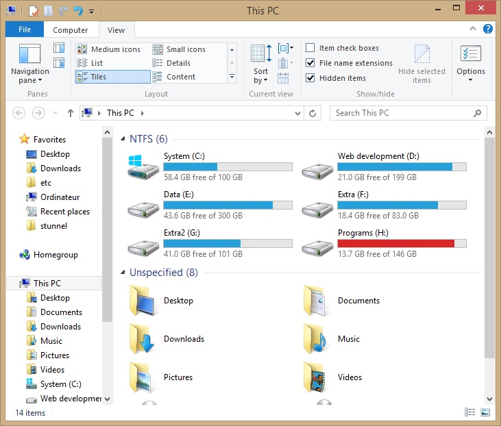

اگر مرحله ی قبلی آموزش xampp را پیگیری کرده باشید، الان xampp بر روی سیستم شما نصب و پیکربندی شده است. در ادامه می خواهیم برخی تنظیمات دیگر را انجام دهیم و با xampp بیشتر آشنا شویم.
همانطور که در قسمت اول در هنگام نصب xampp دیدید، xampp به طور پیش فرض در پوشه ی C:\xampp نصب می شود. ممکن است که شما مسیر نصب آن را تغییر داده باشید. در هر صورت محل نصب xampp را در کامپیوتر تان باز نمایید.
همان طور که مشاهده می کنید، در محل نصب xampp فایل های زیادی وجود دارد. اما پوشه ی htdocs مکانی است که ما در آینده با آن خیلی کار خواهیم داشت.
پوشه ی htdocs پوشه ی ریشه ی وب و apache است و همه ی فایل های وب را باید در اینجا قرار داد. هم اکنون پوشه ی htdocs را باز کنید. مشاهده می کنید که از قبل تعدادی فایل در آن جا وجود دارد.
همچنین پوشه ای به نام xampp هم در آن جا وجود دارد که در واقع فایل های PHP کنترل پنل تحت وب xampp داخل آن وجود دارند. همچنین یک فایل index.php و یک فایل index.html نیز وجود دارد.
با توجه به این که ما می خواهیم سایت هایمان را در این پوشه راه اندازی کنیم، توصیه می کنم که فایل های فوق را rename کنید و یک خط تیره به انتهای آن ها اضافه کنید. مانند index.html- و index.php-
دلیل این کار این است که فایلی که نام index را داشته باشد، توسط وب سرور apache به عنوان فایل خاص و directory index استفاده می شود و ماژول autoindex وب سرور رو از کار می اندازد. باز هم در مورد autoindex صحبت خواهیم کرد.
پس از این که فایل ها را rename کردید، خوب است که آن ها را مخفی هم بکنیم. چون فایل های xampp که داخل پوشه ی htdocs وجود دارند، به درد ما نمی خورند و دست و پا گیر هستند و بهتر است که مخفی باشند تا آن ها را نبینیم.
برای این منظور همه ی فایل ها را انتخاب کنید و روی آن ها راست کلیک کنید و Properties را انتخاب نمایید. تا پنجره مطابق شکل زیر باز شود:
تیک گزینه ی Hidden را کلیک کنید و OK کنید.
پنجره ای باز می شود که از شما می پرسد که آیا می خواهیم فقط پوشه های انتخاب شده مخفی شوند یا همه ی فایل ها و پوشه های زیر مجموعه ی آن ها نیز مخفی شود. شما گزینه ی اول را انتخاب کنید و OK کنید.
نکته: در ویندوز، به طور پیش فرض، پسوند فایل ها نشان داده نمی شود و فایل های hidden هم دیده نمی شوند. اما از آن جایی که ما توسعه دهنده و برنامه نویس هستیم، دوست داریم که پسوند فایل ها را مشاهده کنیم. بعدا روش آن را به شما شرح خواهم داد. اگر فایل های مخفی را نشان دهید، نتیجه مطابق شکل زیر خواهد شد:
تنظیمات ویندوز XP برای نمایش فایل های مخفی و پسوند فایل ها
در ویندوز XP و همچنین در ویندوز 7 روش کار تقریبا مشابه است. My Computer را باز کنید و از منوی Tools گزینه ی Folder Options را انتخاب نمایید.
در پنجره ی Folder Options مطابق تصویر زیر تنظیمات را انجام دهید:
گزینه ی Show hidden files and folders سبب می شود که فایل های مخفی به صورت کمرنگ نمایش داده شوند و شما از وجود آن ها مطلع شوید.
گزینه ی Hide Extensions for known file types اگر فعال باشد، پسوند فایل ها را مخفی می کند. تیک این گزینه را بردارید (آن را غیر فعال کنید) و دکمه ی OK را کلیک کنید.
تنظیمات ویندوز 8.1 برای نمایش فایل های مخفی و پسوند فایل ها
ویندوز 8.1 نیز مشابه قبلی است، اما روش کار اندکی تفاوت جزیی دارد.

در This PC در قسمت بالا سمت راست، بر روی آیکون Options کلیک کنید و مطابق تصویر زیر تنظیمات را انجام دهید که مشابه ویندوز XP می باشد.
پس از انجام تنظیمات فوق، اکنون به پوشه ی htdocs باز می گردیم. و سعی می کنیم که کمی کار با PHP را شروع کنیم.
شروع کار با PHP
مطابق تصویر فوق در پوشه ی htdocs راست کلیک کنید و New -> Text document را انتخاب کنید تا یک فایل متنی جدید ایجاد کنید. نام آن را به دلخواه خودتان وارد کنید. فقط دقت کنید که پسوند آن .php باشد تا توسط وب سرور به عنوان یک فایل PHP پردازش گردد.
من نام ahmad.php را برای فایل انتخاب کردم.
سپس فایلی که ایجاد کردید را با ویرایشگر مورد علاقه تان باز کنید. برای سادگی، من فایل را با Notepad باز می کنم. روی فایل دوبار کلیک می کنم و notepad را برای باز کردن فایل انتخاب می کنم.
سپس محتویات را به شکل زیر تایپ کنید:
<!doctype html> <html> <head> <title>Test PHP</title> <meta charset="utf-8" /> </head> <body> <p>The current time is:</p> <?php echo time(); ?> <hr /> <?php phpinfo(); ?> </body> </html>
سپس فایل را ذخیره کنید.
اکنون می توانید آدرس http://localhost/ را در مرورگرتان باز کنید تا سایت تان را مشاهده کنید.
به دلیل این که ما فایل های index را تغییر نام دادیم و دیگر فایل index نداریم، در مرورگرتان لیست فایل های موجود را مشاهده می کنید:
این صفحه، توسط وب سرور apache تولید شده است و وجود ماژولی به نام autoindex در آپاچی، منجر به نمایش این صفحه می شود. برای اجرای فایل ahmad.php کافی است روی نام آن کلیک کنیم.
دقت کنید که آدرس دسترسی به هر فایل در مرورگر به چه صورت است: http://localhost/ahmad.php
آنچه که خواهید دید، به صورت زیر می باشد:
که حاصل اجرای کد html و php ای است که در فایل ahmad.php ذخیره نمودیم.
تابع echo در php برای چاپ متن در صفحه ی وب می باشد.
تابع time() زمان فعلی سیستم را به فرمت unix timestamp نمایش می دهد.
تابع phpinfo() هم اطلاعات php را با جزییات کامل نمایش می دهد.
لطفا در قسمت بعدی با ما همراه باشید تا روش کار با MySQL و روش نصب Drupal را به شما آموزش دهم.
با آرزوی موفقیت روز افزون برای شما.
نظرات شما
قسمت نظرات با استفاده از سرویس دیسکاس پیاده سازی شده است. متاسفانه این سرویس از داخل ایران قابل دسترس نیست. لطفا از آی پی خارجی استفاده کنید.